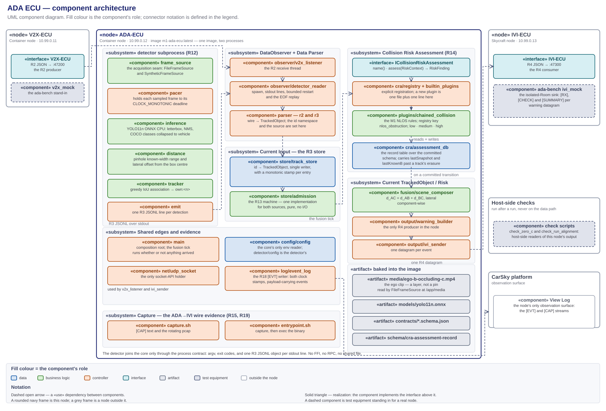
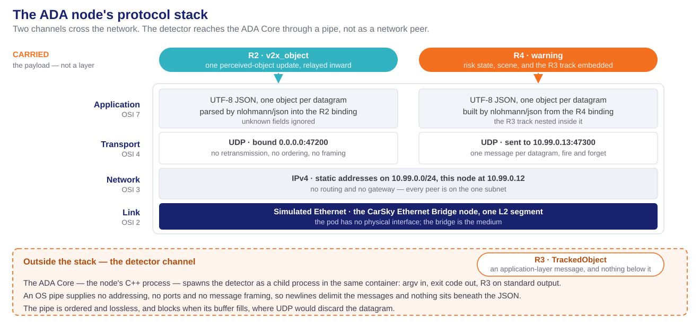

ADA ECU — high-level design (R3, R12–R15; R18 ADA side)¶
The ADA node's HLD, and the sole design authority for
ADA_ECU/. Every component this node runs, its role, input and output, where it lives, and how the components connect. Decision record: ada-ecu-design-decisions.md (D1–D11). Frozen contracts: r2-v2x-object.schema.json in, r3-tracked-object.schema.json as the store's object model, r4-ada-ivi.schema.json out. Deploy and verify: deploy-ada-ecu-walkthrough.md. Node facts: node-ada-ecu.md.Diagrams: ada-ecu-module-architecture.svg (components, paired with its
.drawio) · phase2-4-ada-ecu-components.puml (module graph) · phase2-4-ada-ecu-callflow.puml (sequence) · phase2-4-ada-ecu-admission.puml (the R13 state machine).
{kind=link}
Abridged version. A reader who does not need the full document can take the design deck instead: Phases 2-4 — ADA ECU Design (HTML). It presents this HLD; where the two differ, this document governs.
1. Scope and authority¶
ADA_ECU/ only — ego's perception and fusion node, from the R2 datagram arriving on the wire and the clip frame leaving the decoder, to the R4 warning datagram leaving the node.
- In scope: this folder's C++17 core and Python detector, their components and seams, the node's two network endpoints, the model and clip it ships, and the host-side scripts that read its own logs.
- Out of scope: what the V2X ECU does before R2 and what the IVI does after R4, which are those nodes' designs; the deploy and verify procedure, which the walkthrough owns; the task breakdown, which the plan owns; the radar and live-camera inputs drawn in ada-ecu.svg — M1 has no radar and no live camera bring-up.
{kind=link}
This is the only design document governing this node. It fixes the component set and each component's responsibility, every deliverable's path, the seams, the configuration keys, and the evidence log lines.
- Task planning decomposes from this document plus the requirements report, and nothing else. Requirement numbers and acceptance come from m1-cooperative-awareness.md; everything structural comes from here — which component a subtask creates, its path, the interface it satisfies, the log line that closes it. Deploy and verify subtasks come from the walkthrough, per walkthrough-driven-delivery.md.
- Plans cite; they do not restate. A brief links the section governing its step, so a change lands in one place.
- Implementation does not extend this silently. A component, path or configuration key not designated here is not created ad hoc — the design changes first.
- What overrides it: the requirements report, the frozen R2/R3/R4 contracts, and the walkthrough for procedure. On conflict, the CLAUDE.md authority order decides.
2. Required reading and sourced notes¶
Requirement documents¶
Read in full before this design is written or changed. The requirements decide what the node must do; this document only decides how.
| Document | What it fixes for this node |
|---|---|
| m1-cooperative-awareness.md — the authority | R3, R12, R13, R14, R15 whole — definition, dependency, acceptance, tech stack. R2 as the input contract and R4 as the output contract. R5/R6: node type, bridge, address, ports. R18: the evidence stream. R19: zero direct C detections for the whole run. §1: this node's responsibility list and the demo table. §3(d)/(f)/(g): the stack. §4: the standing decisions |
| Its figures — ada-ecu.svg · vehicleC_track_admission_state_machine.png | The R14 module shape this design realizes — DataObserver, Data Parser, Current Input, Collision Risk Assessment, Current TrackedObject/Risk — and the R13 lifecycle, realized as phase2-4-ada-ecu-admission.puml |
| r2-v2x-object.schema.json · r3-tracked-object.schema.json · r4-ada-ivi.schema.json | The three frozen contracts, field for field, with their bounds and their nullable fields (§10) |
| m1-run-timing-and-event-triggering.md | R20/R21/R22 whole. §6.2's clock-domain ruling, which this design makes (D10); §6.1's three detector pacing keys and the two risk-band values; §6.6's run choreography — T0, the paced clip, the matched bench-cycle and clip periods, and the band pair on the composed range (D11); §6.4's tools/check_run_alignment.py and its K1–K6 checks (§12) |
| m1-video-source-and-ivi-dashcam.md | The clip reaches the container as one image layer and by no other route. The IVI dashcam view is deferred, and no part of it is built here (D6) |
| milestone1_high_level_plan.md | §4's R13 gate constants; §2's near-collinear composition assumption; Phases 2, 3 and 4 acceptance; §6's deferred scope |
| node-ada-ecu.md | Image tag, blueprint command and capabilities, env set, pin, address |
| deploy-ada-ecu-walkthrough.md | The isolated-Room configuration and the observables its § Expected outputs and acceptance names (§12) |
{kind=link}
Research notes¶
Non-authoritative scratch; on any conflict the CLAUDE.md authority order wins.
| Note | Adopted here |
|---|---|
| phase0-contract-freeze-hld.md | D1's access model — byte-synced schema copies, no cross-folder reads; D2's bindings as pure model code; D4's additive-version tolerance. The bindings in src/contracts/ are the only message models this design uses (D1) |
| v2x-ecu-hld.md and its decisions | The sole-socket-holder rule; the [EVT] line's mono_ms/epoch_ms pair and its payload-carrying events, so one offline reader walks both nodes (D8); the clock discipline this node continues (D10); the entrypoint.sh plus capture.sh tcpdump pattern, reused here for the ADA→IVI hop (D9) |
| scenario-player-hld.md and its decisions | The bench cadence cpm_rate_hz (10 Hz default), which is the relayed-update rate this design sizes TRACK_TIMEOUT_MS against; the two committed scenarios — default.yaml closing C from 70 m to 20.5 m across a 10.0 s cycle, crossing the gate 8.0 s in, and c-out-of-range.yaml held beyond the exit gate — as the R13 and R14 exercise inputs; the bench half of the R22 alignment, start_delay_s set to this node's detector warm-up (D11) |
3. The component architecture¶

Source: research_notes/ada-ecu-module-architecture.svg, paired with its .drawio. The module graph alone is phase2-4-ada-ecu-components.puml.
A UML component diagram. Fill colour is the component's role; «use» dependencies are dashed with an open arrowhead; realization is dashed with a hollow triangle; a seam is a provided interface meeting a required one. The two packages inside the image are the processes of D2: the C++17 ada_ecu core and the Python detector subprocess. The core's inner packages carry ada-ecu.svg's block names — DataObserver, Data Parser, Current Input, Collision Risk Assessment, Current TrackedObject/Risk. Component names below are the short package/module form — §4 resolves each to its path.
MVC separation¶
Every component sits in exactly one layer, held there by the rule in the right-hand column.
| Layer | Where | Rule that keeps it separate |
|---|---|---|
| Data | src/contracts/, detector/contracts/, store/track_store, cra/assessment_db with schema/, config/config, log/event_log |
Models and stores hold no rules: the store keeps, refreshes and erases entries but never decides what a distance means, and the bindings carry no transport |
| Business logic | store/admission, cra/plugins/chained_collision, fusion/scene_composer, and the detector's inference, distance and tracker |
Pure functions of their inputs. None opens a socket, reads the environment, or formats a wire message |
| UI logic (controller) | main, observer/, parser/, output/warning_builder, output/ivi_sender, and the detector's main, pacer and emit |
The controller owns the clock, the threads, the subprocess and the sockets. It holds no rules, and it is what builds the message the IVI's view model consumes |
| UI | none — the node is headless | The rendering surface is the IVI's God view (R16/R17), which consumes R4; the local observation surface is the [EVT] stream (§12) |
4. Folder structure¶
The tree designates the path of every component this document names. The image workdir /app mirrors this folder, so /app/detector/main.py is detector/main.py here.
ADA_ECU/
├── Dockerfile two stages, one base image, single-platform arm64 (D9)
├── entrypoint.sh starts capture.sh, then execs ./ada_ecu (D9)
├── capture.sh ADA→IVI live [CAP] text and rotating pcap (D9)
├── .dockerignore keeps doc/, tests/ and tools/ out of the build context
├── CMakeLists.txt the ada_ecu executable, the module libraries, the CTest targets
├── README.md one-screen orientation; points here
│
├── contracts/ byte-synced r2 · r3 · r4 schema copies (D1)
├── schema/
│ └── cra-assessment-record.schema.json the R14 record schema — node-local, not a synced contract (D4)
│
├── src/ the ada_ecu core — C++17
│ ├── main.cpp the composition root and process entry (D2)
│ ├── config/config.{hpp,cpp} the node's only env reader
│ ├── net/udp_socket.{hpp,cpp} the only socket-API holder
│ ├── observer/
│ │ ├── input_queue.hpp the bounded queue: two producers, one consumer (D2)
│ │ ├── v2x_listener.{hpp,cpp} the R2 receive thread
│ │ └── detector_reader.{hpp,cpp} detector spawn, lifecycle, and the stdout JSONL read thread
│ ├── parser/
│ │ ├── r2_parser.{hpp,cpp} R2Message → TrackedObject, source v2x_relayed
│ │ └── r3_parser.{hpp,cpp} detector JSONL line → TrackedObject, source own_sensor
│ ├── store/
│ │ ├── track_store.{hpp,cpp} the R3 store: single writer, monotonic expiry stamp (D10)
│ │ └── admission.{hpp,cpp} the R13 state machine — pure, no I/O (D3)
│ ├── cra/
│ │ ├── i_collision_risk_assessment.hpp the R14 interface (D4)
│ │ ├── registry.{hpp,cpp} the plugin registry, lookup by warningType
│ │ ├── builtin_plugins.cpp the one file edited when a plugin is added (D4)
│ │ ├── assessment_db.{hpp,cpp} the typed accessor over the schema/ record (D4)
│ │ └── plugins/chained_collision.{hpp,cpp} the M1 NLOS plugin (D5)
│ ├── fusion/scene_composer.{hpp,cpp} d_AC = d_AB + d_BC, lateral component-wise (D5)
│ ├── output/
│ │ ├── warning_builder.{hpp,cpp} RiskFinding + geometry → R4WarningEvent (D7)
│ │ └── ivi_sender.{hpp,cpp} the R4 UDP egress (D7)
│ ├── log/event_log.{hpp,cpp} the R18 [EVT] JSONL writer (D8)
│ └── contracts/{r2_message,tracked_object,r4_message}.{hpp,cpp} the frozen bindings (D1)
│
├── detector/ the R12 detector — Python 3.11 subprocess
│ ├── main.py argv, wiring, exit codes — the process contract's detector side
│ ├── config.py the detector's only env reader
│ ├── frame_source.py the frame-source seam, FileFrameSource and SyntheticFrameSource (D6)
│ ├── pacer.py the CLOCK_MONOTONIC deadline scheduler over sampled frames (D10)
│ ├── inference.py the YOLO11n ONNX session, letterbox, NMS, class mapping
│ ├── distance.py the pinhole known-width range and lateral offset
│ ├── tracker.py greedy IoU association → stable own:<n> ids
│ ├── emit.py R3 JSONL on stdout through the frozen binding
│ ├── contracts/tracked_object.py the R3 Python binding (D1)
│ ├── requirements.txt runtime: onnxruntime · opencv-python-headless · numpy
│ ├── requirements-dev.txt pytest · jsonschema
│ └── tests/ test_r3_roundtrip · test_frame_source · test_pacer
│ test_distance · test_tracker · test_emit_contract
│
├── models/yolo11n.onnx exported once by tools/export_yolo11n.py, committed (D6)
├── media/
│ ├── ego-b-occluding-c.mp4 the ego clip, baked into the image (D6)
│ └── ego-b-occluding-c.source.md its provenance and licence
│
├── tools/ host-side scripts: no image, no data path, outside the build context
│ ├── export_yolo11n.py the one-off Ultralytics → ONNX export (D6)
│ ├── make_sample_video.py the CI decode fixture generator, never the demo source
│ ├── check_zero_c.py the R12/R19 zero-C check (D6)
│ ├── check_run_alignment.py the R21/R22 run-alignment check, K1–K6 (D10, D11)
│ ├── event_report.py [EVT] → the collision-risk event list (D8)
│ └── extract_pcap.sh host-side log → .pcap (D9)
│
├── tests/ GoogleTest + CTest
│ ├── test_sanity.cpp
│ ├── contracts/ test_r2_roundtrip · test_r3_roundtrip · test_r4_roundtrip
│ │ test_r4_additive_version
│ ├── store/ test_track_store · test_admission_own_sensor
│ │ test_admission_relayed · test_expiry_monotonic
│ ├── parser/ test_r2_parser · test_r3_parser
│ ├── cra/ test_registry · test_assessment_db · test_chained_collision
│ ├── fusion/test_scene_composer.cpp
│ ├── output/test_warning_builder.cpp
│ └── fixtures/
│ ├── samples/ byte-synced contract samples
│ ├── own_sensor_mock.jsonl the recorded own-sensor stream the reader replays (D2)
│ └── malformed/ the R2 and R3 rejection corpus
│
└── doc/ this document, the decision record, the diagrams, research_notes/
5. Platform and boundary¶
| Component | Role | Input | Output |
|---|---|---|---|
| CarSky Container Node | the platform this node runs on: one pod, one image, no volume | the image pulled from Zot; env from the blueprint node config | a process on the Room network at 10.99.0.12, and its stdout |
«interface» V2X-ECU |
the producer's side of R2 — a dependency on an address, never on an implementation | the CPM it decoded | one R2 JSON datagram per perceived-object update, to 10.99.0.12:47200 |
«interface» IVI-ECU |
the consumer's side of R4 — a dependency on an address | the warning this node composes | nothing; the wire is one way |
| the ego clip | the R12 frame source: a file inside the image, not a stream and not a pin (D6) | — | H.264 frames to FileFrameSource |
| View Log — CarSky | the node's only observation surface | the process stdout | the [EVT] and [CAP] streams, live in the Deployment Viewer or over the logs route |
The V2X ECU is a Container node at 10.99.0.11; the IVI is the Skycraft node at 10.99.0.13. Two things can stand at each address — the real node, or a tools/ada-bench/ role in the isolated Room (§7). Nothing on this side changes with either swap, which is why the node's image and env are identical in both blueprints (walkthrough §5.6).
6. Internal components¶
Each row is one component's single responsibility. A component does what its row says and no more; work fitting no row belongs to a component this document has not defined.
Business logic¶
Pure functions of their inputs, free of the clock, the socket and the environment.
| Component | Role | Input | Output |
|---|---|---|---|
store/admission |
the R13 machine of D3: one implementation for both sources, holding the Schmitt band, the confirm counter and the expiry test | a track id, its source, an update's distance, the current monotonic time | the next state, or erasure; one track_transition per edge |
cra/plugins/chained_collision |
the M1 NLOS rules of D5: composed range, closing rate and TTC against the three risk bands, debounced by RISK_DWELL_MS |
a RiskContext — the store, the assessment database, the current time |
a RiskFinding; the updated assessment record |
fusion/scene_composer |
the geometry: vehicleB from the nearest own-sensor track, vehicleC = (d_AB + d_BC, y_B + y_BC), ego at the origin |
the two tracks | the R4 geometry triple |
detector/inference |
the YOLO11n ONNX session: letterbox, run, NMS, and the COCO-to-vehicle class collapse |
one Frame |
zero or more scored bounding boxes |
detector/distance |
the pinhole known-width estimate of D6: range from box width, lateral offset from box centre | a box, the frame width, VEHICLE_WIDTH_M, CAMERA_HFOV_DEG |
distance and position.y, metres |
detector/tracker |
greedy IoU association against the previous sampled frame, holding an id while IoU ≥ TRACK_IOU_MIN |
this frame's boxes, the previous frame's ids | a stable own:<n> per box |
Data¶
| Component | Role | Input | Output |
|---|---|---|---|
src/contracts/ — R2Message, TrackedObject, R4WarningEvent, R4StateMessage |
the typed C++ binding of the three frozen schemas, and the node's only object model (D1) | decoded JSON, constructed values | the structs every other component passes around |
detector/contracts/tracked_object |
the R3 Python binding: the same fields, the same wire keys, on the detector side of the process boundary | constructed values, JSONL lines | TrackedObject and its JSONL form |
store/track_store |
the R3 store — the figure's Current Input: id → TrackedObject with a parallel monotonic stamp per entry (D10), and the sole writer of state (D3) |
upserts from the two parsers, erasures from admission | the current track set; nearest(source) for composition |
cra/assessment_db |
the R14 record table of D4: typed get / upsert / erase over the committed record schema, carrying a track's last snapshot past its erasure |
assessment records | the prior record a plugin's edge-trigger and closing-rate need |
config/config |
the node's only env reader; validates and fails loud, naming the offending key | environ |
an immutable configuration struct |
log/event_log |
the R18 writer of D8: one [EVT] JSONL line per event, both clock stamps, flushed per line, to stdout and optionally to a file |
event name and payload | the evidence stream |
UI logic — the controller¶
| Component | Role | Input | Output |
|---|---|---|---|
main |
the composition root: load config, register plugins, bind the socket, spawn the detector, run the fusion tick, and turn any startup or fatal exception into one logged line and a non-zero exit | the process environment | the running node |
observer/v2x_listener |
the R2 receive thread: one blocking receive per datagram on V2X_LISTEN_HOST:V2X_LISTEN_PORT |
UDP datagrams | raw bodies onto the input queue |
observer/detector_reader |
the detector's lifecycle and its stdout: spawn DETECTOR_CMD, read lines, respawn on EOF or a non-zero exit within DETECTOR_RESTART_MAX (D2) |
the subprocess pipe | raw JSONL lines onto the queue; detector_spawn, detector_eof, detector_restart |
observer/input_queue |
the one bounded queue: two producers, one consumer, so the main thread stays the single writer | items from both readers | items in arrival order |
parser/r2_parser |
R2 → TrackedObject with source = v2x_relayed and id v2x:<stationId>:<objectId>, applying §10.1's mapping rules. A malformed body is rejected and counted, never fatal |
a raw R2 body | one TrackedObject, or one parse_reject |
parser/r3_parser |
one detector JSONL line → TrackedObject with source = own_sensor, ignoring the incoming state (D3) |
a raw JSONL line | one TrackedObject, or one parse_reject |
output/warning_builder |
the node's only R4 producer: RiskFinding plus geometry onto the frozen binding (D7) |
a committed risk transition | one serialized R4 warning event |
output/ivi_sender |
the only R4 egress: one datagram per event to IVI_ECU_HOST:IVI_ECU_PORT |
the serialized event | one UDP datagram; one r4_tx carrying the body |
net/udp_socket |
the only code that includes a socket header; both the listener and the sender consume it, and transient errors are counted and logged rather than thrown | bind, receive, send calls | datagrams and error counts |
detector/main |
the detector's composition root: read env, open the frame source, drive source → pacer → inference → distance → tracker → emit, and exit non-zero on an unrecoverable error | the process environment | the R3 JSONL stream on stdout |
detector/pacer |
the D10 deadline scheduler: hold each sampled frame until its wall-clock instant, and apply DETECTOR_START_DELAY_S before the first |
sampled frames, DETECTOR_CLIP_FPS, the stride |
the same frames, released on schedule |
detector/emit |
one R3 JSONL line per detection per sampled frame, through the frozen binding | a tracked detection | one line on stdout |
Configuration and descriptors¶
Every runtime value the deployment wires enters through env. Core values are read by config/config, detector values by detector/config, and each is read in exactly one place.
| Env — core | Default | Meaning |
|---|---|---|
V2X_LISTEN_HOST · V2X_LISTEN_PORT |
0.0.0.0 · 47200 |
the R2 ingress |
IVI_ECU_HOST · IVI_ECU_PORT |
10.99.0.13 · 47300 |
the R4 egress |
GATE_ENTER_M · GATE_EXIT_M |
30 · 35 |
the R13 admission and drop gate (D3) |
CONFIRM_HITS |
3 |
in-gate updates before tracked (D3) |
TRACK_TIMEOUT_MS |
1000 |
monotonic silence before a track is erased (D3, D10) |
FUSION_TICK_MS |
100 |
the expiry and assessment tick (D2) |
DETECTOR_ENABLED · DETECTOR_CMD |
true · python3 /app/detector/main.py |
the detector spawn; the fixture override is how the core runs without a model (D2) |
DETECTOR_RESTART_MAX |
5 |
bounded restarts after a non-zero exit (D2) |
CRA_ENABLED |
nlos_obstruction |
the active plugin list (D4) |
RISK_NEAR_M · RISK_CRITICAL_M |
60 · 30 |
the medium and high thresholds on the composed range d_AC (D5, D11) |
RISK_TTC_WARN_S · RISK_TTC_CRITICAL_S |
6 · 3 |
the medium and high TTC thresholds (D5) |
RISK_DWELL_MS |
300 |
the debounce before a transition commits (D5) |
STATE_RATE_HZ |
0 |
the optional R15 periodic awareness state (D7) |
EVENT_LOG_PATH · ASSESS_LOG_EVERY_MS |
(empty = stdout only) · 1000 |
the R18 file sink and the assessment heartbeat (D8) |
CAPTURE_FILTER · PCAP_DIR · CAPTURE_ROTATE_S |
udp · /data/capture · 60 |
the capture (D9) |
| Env — detector | Default | Meaning |
|---|---|---|
VIDEO_CLIP_PATH |
/app/media/ego-b-occluding-c.mp4 |
the clip FileFrameSource opens (D6) |
DETECTOR_FRAME_STRIDE |
4 |
decimation: every Nth decoded frame is sampled |
DETECTOR_LOOP |
true |
restart the clip at EOF (D2) |
DETECTOR_REALTIME_PACING |
true |
release sampled frames at wall-clock rate rather than as fast as the CPU allows; true for every demo run, since clip time is run time only under pacing (D10, D11) |
DETECTOR_CLIP_FPS |
20.0 — the committed clip's declared rate |
the rate pacing targets; overridable (D10) |
DETECTOR_START_DELAY_S |
0.0 |
grace from spawn before the first emitted frame (D10) |
MODEL_PATH |
/app/models/yolo11n.onnx |
the ONNX session |
CONF_THRESHOLD · IOU_THRESHOLD |
0.35 · 0.45 |
the detection score floor and the NMS overlap |
TRACK_IOU_MIN |
0.3 |
the frame-to-frame association floor (D6) |
VEHICLE_WIDTH_M · CAMERA_HFOV_DEG |
1.8 · 60 |
the pinhole distance inputs (D6) |
The addresses, the ports and the two gate constants are fixed by a committed source — node-ada-ecu.md and milestone1_high_level_plan.md §4. Every other default above is this design's proposal. A value the blueprint omits falls through to the app's own default, never to an ENV baked into the image.
Startup validation. config/config asserts the rules below and nothing beyond them. A violation names the offending key and exits non-zero. Each rule orders values of one quantity, or bounds a single value. No rule relates a risk threshold to a gate threshold, because the two measure different ranges (D5).
| Rule | Quantity it constrains |
|---|---|
0 < GATE_ENTER_M < GATE_EXIT_M |
the relayed or estimated range of one source, d_BC or d_AB — the R13 Schmitt band (D3) |
0 < RISK_CRITICAL_M < RISK_NEAR_M |
the composed range d_AC — the R14 bands (D5) |
0 < RISK_TTC_CRITICAL_S < RISK_TTC_WARN_S |
time to collision on d_AC (D5) |
CONFIRM_HITS ≥ 1; TRACK_TIMEOUT_MS > 0; FUSION_TICK_MS > 0; RISK_DWELL_MS ≥ 0; STATE_RATE_HZ ≥ 0; DETECTOR_RESTART_MAX ≥ 0 |
a single value's domain |
ports in 1–65535; hosts non-empty; CRA_ENABLED naming registered plugins only |
a single value's domain |
DETECTOR_CLIP_FPS > 0; DETECTOR_FRAME_STRIDE ≥ 1; DETECTOR_START_DELAY_S ≥ 0, asserted by detector/config |
a single value's domain, detector side |
| Artifact | Role |
|---|---|
contracts/*.schema.json |
the byte-synced R2, R3 and R4 schemas the bindings bind against (D1) |
schema/cra-assessment-record.schema.json |
the R14 assessment-record schema, node-local (D4) |
Dockerfile · entrypoint.sh · capture.sh |
the image, the process launch and the capture (D9) |
media/ego-b-occluding-c.source.md |
the clip's provenance, licence and encode parameters |
7. External related components¶
Outside the node boundary: the V2X-ECU and IVI-ECU interfaces and the View Log of §5, plus the contract sources and the test equipment below.
- The frozen schemas live in
contracts/at the repo root. This folder holds byte-synced copies gated bycontracts/check_sync.py; a copy edited in place is a drift defect the gate fails on (D1). - The shared samples live there too and are synced into
tests/fixtures/samples/and the detector's test resources.
Test equipment¶
Scaffolding for exercising this node alone. None of it ships in the node image.
| Component | Role | Input | Output |
|---|---|---|---|
tools/ada-bench/ → m1-ada-bench:latest, at the repo root |
replaces both neighbours in the isolated Room: ROLE=v2x_mock emits R2 at 10.99.0.11, ROLE=ivi_mock binds 47300 at 10.99.0.13 and checks every warning |
env-configured profile, rate and distance walk | R2 datagrams; [RX], [CHECK], [SUMMARY] and [CAP] lines |
tests/fixtures/own_sensor_mock.jsonl |
a recorded own-sensor stream the real detector_reader replays through DETECTOR_CMD, so the core runs with no model and no clip (D2) |
— | R3 JSONL lines |
tools/make_sample_video.py |
a synthetic clip proving the decoder and the JSONL path in CI; it cannot produce R12 detection evidence (D6) | — | a short .mp4 |
tools/check_zero_c.py · tools/check_run_alignment.py · tools/event_report.py |
host-side readers of this node's own output | the [EVT] stream, the detector's R3 JSONL, the bench's [TX] JSONL |
the zero-C verdict, the K1–K6 verdict, the collision-risk event list |
A mock of another node never lives in this folder. tools/ada-bench/ sits at the repo root so it can change without rebuilding the thing it tests, and so bench code cannot ship inside the real image (node-code-layout § tools/, walkthrough §2.4). The scripts in ADA_ECU/tools/ mock nothing: they read this node's own logs, build no image, and are excluded from the build context.
8. Interfaces, ports and the layer rule¶
V2X-ECUandIVI-ECU— the node's two outside dependencies, and addresses rather than implementations (§5).udp :47200— bound byobserver/v2x_listenerthroughnet/udp_socket; the node's only listening port.udp → 10.99.0.13:47300— the egress onoutput/ivi_senderthrough the same holder; the node's only outbound socket. Nothing else opens one.- The detector process contract — argv in, exit code out, one R3 JSONL object per stdout line.
observer/detector_readerrequires it;detector/main.pyprovides it in a run, and a fixture replayed throughDETECTOR_CMDprovides it in a test (D2). ICollisionRiskAssessment— the R14 seam.cra/registryrequires it;ChainedCollisionand every future plugin provide it (D4).FrameSource— the detector's acquisition seam.detector/mainrequires it;FileFrameSourceandSyntheticFrameSourceprovide it, and a live source would be a third (D6).Detector— the model seam insidedetector/inference, so the network swaps without touching the pipeline.
No layer is collapsed: the admission machine cannot reach a socket, a plugin cannot send a datagram, and the detector cannot reach the store — its only route in is one JSONL line through a parser.
Protocol stack¶

Source: phase2-4-ada-protocol-stack.svg.
{kind=link}
Two channels cross the network — R2 inbound and R4 outbound — and they share every layer below the encoding row. Which component owns each layer:
| Layer | Owned here by |
|---|---|
| Message | contracts/r2_message's R2Message inbound (§10.1); contracts/r4_message's R4WarningEvent outbound (§10.3), with the contracts/tracked_object record nested inside it (§10.2) |
| Encoding | the nlohmann/json bindings inside those three contract types — UTF-8 JSON, one object per datagram, unknown fields ignored on the inbound side |
| Transport, network, link | net/udp_socket alone — the layer rule above is what keeps it there |
- The stack carries no ASN.1 and no ITS envelope. This node never sees a CPM; the air message is decoded one hop upstream, so nothing here links a codec (§11).
- IPv4 is static and routerless. Every peer sits on
10.99.0.0/24with this node at10.99.0.12, and the link layer is the CarSky Ethernet Bridge — one simulated L2 segment, since the pod has no physical interface (R6). - The detector channel is outside the stack.
observer/detector_readerspawnsdetector/main.pyas a child process in the same container and reads R3 records from its standard output: an OS pipe supplies no addressing, no ports and no framing, so newlines delimit the messages and nothing sits beneath the JSON (D2). - That asymmetry is a behavioural difference, not a notational one. The pipe is ordered and lossless and blocks when its buffer fills, where UDP discards the datagram — which is why back-pressure appears on the detector path and loss appears on the network paths.
9. Call flow¶
phase2-4-ada-ecu-callflow.puml — PlantUML sequence: bring-up and detector spawn, then B detected in the clip → R3 JSONL → store, relayed C → store, and the fusion tick driving expiry → R13 admission → R14 assessment → R15 emission → IVI, with the parse-reject, b_unknown and detector-EOF branches.
10. The contract¶
This node sits between two frozen contracts and owns a third. It consumes R2 from the V2X ECU, produces R4 to the IVI ECU, and holds every object in the R3 shape in between. All three are frozen: a field change is a re-freeze across every consumer, and the node's copies under contracts/ are byte-synced to the normative files (D1).
10.1 R2 — the message set from the V2X ECU (consumed)¶
| Property | Value |
|---|---|
| Direction | V2X-ECU → ADA-ECU, one way |
| Transport | UDP to 10.99.0.12:47200, one message per datagram |
| Encoding | UTF-8 JSON, one type: "v2x_object" message per perceived-object update |
| Normative schema | r2-v2x-object.schema.json |
| Node copy | ADA_ECU/contracts/r2-v2x-object.schema.json; src/contracts/r2_message binds against it |
The schema's field table is normative and is not restated. What this node owes it, at the parser/r2_parser boundary:
| Obligation | How it is met |
|---|---|
object.distance is R13's admission input, and the V2X ECU derives it — this node never recomputes it |
admission reads the field as received |
object.confidence is nullable when the CPM confidence was unavailable, while R3 confidence is required in 0–1 |
a null maps to 0.0, the lowest confidence; the received value stays visible in the r2_ingest payload |
position.confidence is a position accuracy in metres and has no R3 home |
it is carried in the r2_ingest payload and dropped from the track |
sender.speed is nullable until the V2X ECU has seen two CPMs from that station |
this node reads it for evidence only; no rule depends on it |
| Track identity must not collide with an own-sensor id | the id is v2x:<stationId>:<objectId>, a namespace the detector cannot mint (D3) |
rxTime is the V2X ECU's clock |
it is a record value; no arithmetic mixes it with this node's clock (D10) |
| Unknown extra fields are tolerated | the binding ignores them, per the Phase 0 additive-version rule |
10.2 R3 — the object model of the store (owned)¶
| Property | Value |
|---|---|
| Role | the one schema every perception source conforms to, so sources are interchangeable behind one interface |
| Crossing points | the detector's stdout JSONL (own-sensor entries), and the object field of an R4 warning (§10.3) |
| Normative schema | r3-tracked-object.schema.json |
| Node copies | ADA_ECU/contracts/r3-tracked-object.schema.json, bound by src/contracts/tracked_object in the core and detector/contracts/tracked_object in the detector |
Two fields need a rule beyond the schema, because the schema cannot say who fills them.
stateis written by the store alone (D3). An incoming detector line or R2-derived object carriesnot_trackedby convention, and that value is ignored.timestampsare filled per source, all fromCLOCK_REALTIME(D10):
| Field | v2x_relayed |
own_sensor |
|---|---|---|
measured |
rxTime + timeOfMeasurement — both from the same R2 message, so one clock domain |
the detector's stamp at frame capture |
received |
rxTime — the V2X ECU's clock, as a record value |
the detector's emit time |
lastUpdated |
this node's clock at the store write | this node's clock at the store write |
Track expiry does not read lastUpdated; it compares the parallel monotonic stamp track_store keeps beside each entry (D10).
10.3 R4 — the message set to the IVI ECU (produced)¶
| Property | Value |
|---|---|
| Direction | ADA-ECU → IVI-ECU, one way |
| Transport | UDP to 10.99.0.13:47300, one message per datagram, no framing header |
| Encoding | UTF-8 JSON |
| Normative schema | r4-ada-ivi.schema.json, embedding the R3 schema |
| Node copy | ADA_ECU/contracts/r4-ada-ivi.schema.json; src/contracts/r4_message binds against it, and output/warning_builder is its only producer (D7) |
Two message kinds share the port, discriminated by type.
type: "warning" — edge-triggered, the committed message, emitted on every committed change of riskState for a (warningType, trackId) in both directions (D5):
| Field | Filled from |
|---|---|
schemaVersion · type |
the binding's constants |
warningType |
the plugin's registry key; M1 emits nlos_obstruction (D4) |
riskState |
the RiskFinding's level — low, medium or high (D5) |
object |
the R3 snapshot of the triggering track C, from the store, or from the assessment record's lastSnapshot once the track has been erased (D4) |
geometry.ego |
the frame origin |
geometry.vehicleB |
the nearest own-sensor track, or lastKnownB on a clearing event — the field is required and never null (D5) |
geometry.vehicleC |
the composed C position, and null exactly when C's track has been erased |
object.source is what the R19 claim rests on. It is v2x_relayed on every warning this node emits, because only a relayed track can be C (D6); the IVI's provenance guard renders ghost C on that value alone.
type: "state" — the optional periodic awareness state of R15: schemaVersion, type, seq and vehicles with the same three positions, last-value-wins by seq. STATE_RATE_HZ = 0 leaves it off, and no acceptance criterion depends on it (D7).
11. Tech stack, build and CI¶
No dependency outside this table enters the node without a design change. Traces are to m1-cooperative-awareness.md and to the decision record.
| Area | Stack | Trace |
|---|---|---|
| Core | C++17: one process, two receive threads, a single-writer main loop | report §3(d); D2 |
| Messages | nlohmann/json through the frozen bindings — R2 in, R3 in the store, R4 out | R2/R3/R4 tech stack; D1 |
| Transport | POSIX UDP through src/net/ |
report §3(f), R6 |
| Detector | Python 3.11; YOLO11n exported to ONNX on ONNX Runtime CPU; OpenCV opencv-python-headless decode; numpy |
report §3(g), R12; D6 |
| Process boundary | argv, exit codes and R3 JSONL over stdout — no FFI, no RPC | report §3(d); D2 |
| Build and test | CMake ≥ 3.22 with GoogleTest and CTest; pytest with jsonschema | Phase 0 toolchain |
| Evidence | JSONL [EVT] stream; tcpdump for the ADA→IVI capture |
R18; R15/R19; D8, D9 |
| Image | Docker multi-stage, one base python:3.11-slim, single-platform linux/arm64 |
R5; D9 |
Deliberately absent: Vanetza, since this node never touches UPER; any database engine (D4); any tracking or monocular-depth library (D6).
Build commands, from the repo root:
cmake -S ADA_ECU -B ADA_ECU/build && cmake --build ADA_ECU/build -j
ctest --test-dir ADA_ECU/build --output-on-failure
python -m pytest ADA_ECU/detector/tests
docker buildx build --platform linux/arm64 --provenance=false --sbom=false -t m1-ada-ecu:latest ADA_ECU/
| CI lane | File | What it does |
|---|---|---|
ada-core-build |
phase2-ci.yml | configure, build and ctest the C++ core on a plain runner |
ada-detector-tests |
phase3-ci.yml |
the detector suite, against SyntheticFrameSource |
contracts-gate |
phase0-ci.yml | byte-identity of this folder's schema and sample copies (D1) |
ada-ecu-image |
phase4-ci.yml | the linux/arm64 image build from context ADA_ECU/, pushed to Zot when CARSKY_ZOT_API_KEY is set |
The image lane runs under emulation on an x86_64 runner, so its timeout matches the existing image lanes. A green image lane is not evidence that a tag reached the registry — the push step is gated on the secret (node-code-layout § Build rules). The bench image the isolated Room needs is built by its own lane from tools/ada-bench/ (walkthrough §3.2).
12. Test strategy¶
Four configurations exercise the same node, differing only in what stands at the two edges.
- Unit — no network, no subprocess. GoogleTest over the pure modules with injected values and fixtures; pytest over the detector modules with
SyntheticFrameSource. This is where the D3 gate boundaries at 30 m and 35 m, the D5 band table, the composed geometry and the pinhole maths are proved against hand-computed values. - Fixture-driven core.
DETECTOR_ENABLED=truewithDETECTOR_CMDreplayingtests/fixtures/own_sensor_mock.jsonlthrough the real reader, and relayed traffic arriving as real datagrams on the real socket. The core runs whole with no model and no clip, and no branch insidesrc/knows the difference (D2). - Isolated Room — the walkthrough's four-node blueprint: the bridge,
tools/ada-bench/asv2x_mockat.11, this node at.12, andada-benchasivi_mockat.13. - Full blueprint — the real bench, V2X ECU and IVI Skycraft node at the same addresses and ports.
Expected output is identical in the last two, because this node's image, command, capabilities and env are unchanged between them (§5) — a difference between the runs is a neighbour finding, not an ADA one.
Expected observables, per walkthrough § Expected outputs and acceptance:
| Observable | Produced by |
|---|---|
detector_spawn, then own_sensor_ingest one line per detection per sampled frame |
observer/detector_reader, detector/emit |
r2_ingest carrying the received R2 body, at ≥ 90 % of the producer's send count |
observer/v2x_listener → parser/r2_parser → log/event_log |
parse_reject count 0 against a conforming producer |
parser/r2_parser, parser/r3_parser |
track_transition to tentative then tracked for v2x:<stationId>:<objectId>, "source":"v2x_relayed" |
store/admission |
track_transition to tracked for own:<n>, "source":"own_sensor" |
store/admission |
zero own-sensor entries claiming a relayed source or a v2x: id, and zero relayed entries claiming an own: id |
structural (D6), asserted by tools/check_zero_c.py |
assessment carrying d_AC, the TTC and the rationale; risk_transition on each committed change |
cra/plugins/chained_collision |
r4_tx carrying the emitted R4 body, with object.source v2x_relayed and numeric geometry.vehicleB |
output/warning_builder → output/ivi_sender |
[CAP] IP 10.99.0.12.<port> > 10.99.0.13.47300: UDP |
capture.sh |
with the relayed object held beyond the gate, r2_ingest still counting up and no relayed track_transition at all |
store/admission's gate — the negative case |
The single strongest line is r4_tx: it proves both tracks existed at the same instant rather than at two different times, which is Phase 4's output acceptance.
R20/R21/R22 alignment is checked after a run by tools/check_run_alignment.py (D10, D11). K1–K3 and K6 read this node's [EVT] stream, K4 the detector's R3 JSONL, K5 the bench's [TX] JSONL — each check stays inside one clock domain.
| # | Check | Bound |
|---|---|---|
| K1 | at every r4_tx, a tracked own_sensor B entry exists whose lastUpdated is within TRACK_TIMEOUT_MS |
pass |
| K2 | the first own_sensor → tracked transition precedes the first v2x_relayed → tracked transition |
≥ 1.0 s |
| K3 | max │lastUpdated(own_sensor B) − lastUpdated(v2x_relayed C)│ over all r4_tx |
≤ 1000 ms |
| K4 | the detector's frame-index advance against its own emit-timestamp advance, over ≥ 60 s | ±2 % of DETECTOR_CLIP_FPS / DETECTOR_FRAME_STRIDE |
| K5 | the bench's scenario_time_s advance against its mono_ms advance, over ≥ 60 s |
±1 % |
| K6 | the interval from T0 — the run's first own_sensor R3 line — to the first r4_tx |
8.0 s ≤ Δ < 10.0 s |
K6 is R22's ADA-side observable, and it is what the D11 configuration exists to produce. Its IVI-side counterpart, K7, is read from the guest and belongs to that node (ivi-ecu-hld.md §12).
13. Design decisions¶
ada-ecu-design-decisions.md — D1–D11, binding on implementation and cited by number throughout this document: the one folder and one object model (D1), the process and thread model (D2), R13 admission (D3), the R14 interface, registry and database (D4), the risk vocabulary and edge-triggered emission (D5), the R12 detector (D6), the R15 output stage (D7), the R18 evidence stream (D8), the deployment shape (D9), the clock domains with paced stimulus (D10), and the R22 run choreography (D11).